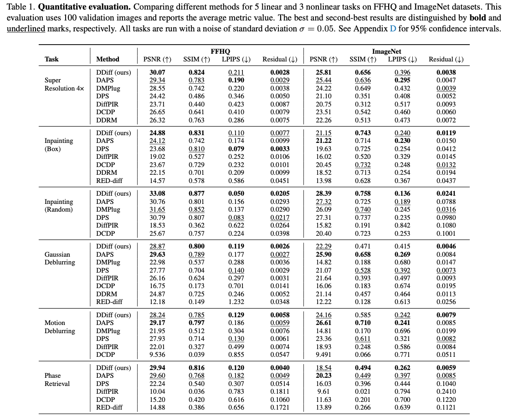
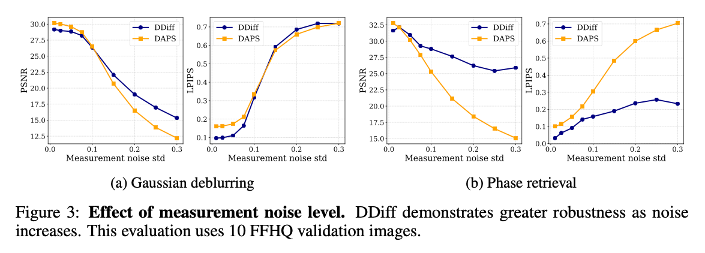
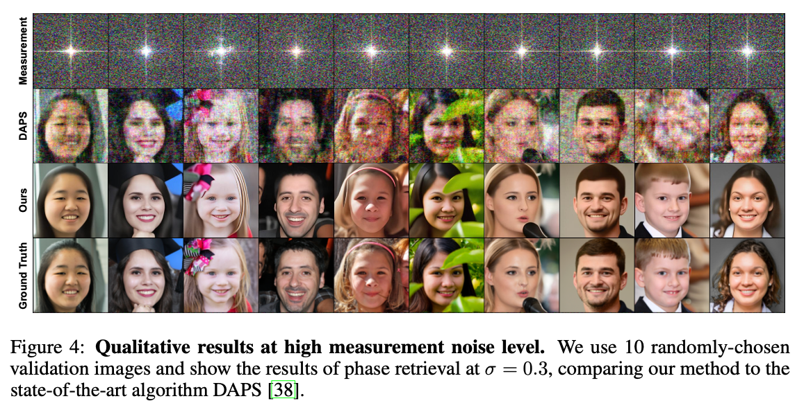
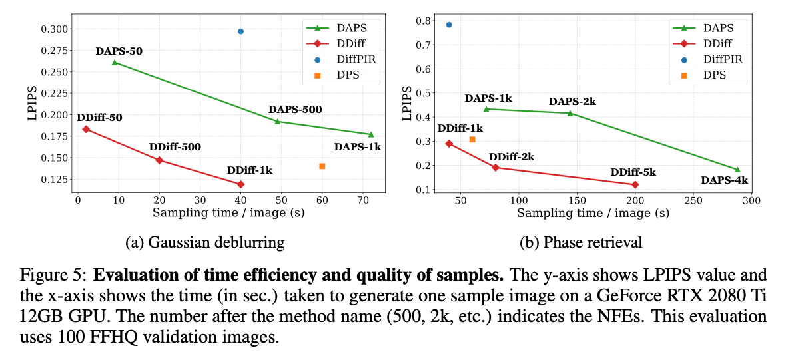

Ill-posed inverse problems are fundamental in many domains, ranging from astrophysics to medical imaging. Emerging diffusion models provide a powerful prior for solving these problems. Existing maximum-a-posteriori (MAP) or posterior sampling approaches, however, rely on different computational approximations, leading to inaccurate or suboptimal samples. To address this issue, we introduce a new approach to solving MAP problems with diffusion model priors using a dual ascent optimization framework. Our framework achieves better image quality as measured by various metrics for image restoration problems, it is more robust to high levels of measurement noise, it is faster, and it estimates solutions that represent the observations more faithfully than the state of the art.
DDiff employs the Alternating Direction Method of Multipliers (ADMM) framework, which introduces a slack variable z with the constraint x = z. This decomposition allows the data fidelity and prior terms to be handled separately through three alternating update steps.
The primary innovation of DDiff lies in its novel z-update formulation. Previous methods like DiffPIR use Half-Quadratic Splitting (HQS) without dual variables, while naive implementations of diffusion models in ADMM frameworks suffer from off-manifold inputs to the score function.
DDiff addresses this through two key contributions:
1. Proper Integration of Dual Variables: Unlike HQS-based methods, DDiff maintains dual variables that accumulate constraint violations, leading to improved measurement consistency.
2. On-Manifold Score Evaluation: The specialized noising step ensures that the diffusion model's score function operates on inputs consistent with its training distribution, enabling more accurate prior application.
Ablation studies confirm that both components are essential and must work together - using dual variables without the noising step actually degrades performance compared to not using dual variables at all.
Additionally, our method provides:
Provable Convergence. Under bounded denoiser and bounded gradient assumptions, the DDiff iterates (x, z, u) form Cauchy sequences and converge to a fixed point (x★, z★, u★) - notably without requiring a convex prior. To our knowledge, this is the first fixed-point convergence result for a diffusion-based posterior optimization method.
Latent extension (LatentDDiff). The same dual-ascent structure extends naturally to the latent space of a latent diffusion model (LDM), enabling efficient inference in compact feature spaces while preserving data consistency.

Qualitative results. DDiff produces sharper and cleaner reconstructions than DPS and DAPS across tasks (σ = 0.05).
DDiff was evaluated across a comprehensive suite of five linear and three nonlinear inverse problems (super-resolution, box and random inpainting, Gaussian and motion deblurring, phase retrieval, nonlinear deblurring, and high dynamic range imaging) on the FFHQ 256×256 and ImageNet 256×256 datasets. We compare against a broad set of state-of-the-art baselines, including DAPS, DMPlug, DCDP, RED-diff, DDRM, DPS, and DiffPIR, as well as latent-diffusion baselines (LatentDAPS, PSLD, ReSample) for our LatentDDiff variant.
DDiff achieves significantly lower LPIPS scores (better perceptual quality) across most tasks and exhibits strong performance in PSNR and SSIM metrics.

Quantitative evaluation on FFHQ and ImageNet, averaged over 100 validation images (σ = 0.05). Best and second-best results are shown in bold and underline. Please refer to the full paper for the comprehensive set of inverse tasks and the complete quantitative and qualitative results, including latent-diffusion experiments, confidence intervals, and additional visual comparisons.
DDiff also reconstructs solutions that represent the observations more faithfully: across tasks it attains lower residual error (the Residual column above), indicating reconstructions that more closely match the measurement statistics. Since the log-likelihood of the observations is an indicator of the level of hallucination a generative prior introduces, closer-to-zero residuals reflect higher fidelity and less hallucination.
A critical finding is DDiff's exceptional robustness to measurement noise. While competing methods show rapidly degrading performance as noise increases, DDiff maintains high-quality reconstructions even under severe noise conditions. This characteristic is particularly valuable for real-world applications such as low-dose CT imaging or cryo-electron microscopy where noise is inherent to the measurement process.
Why is the method robust to high measurement noise?

Effect of measurement noise level. DDiff (blue) degrades far more gracefully than DAPS (orange) as the noise standard deviation grows. On phase retrieval at σ = 0.3, DDiff reduces LPIPS by roughly 3×.

Qualitative results at high measurement noise (phase retrieval, σ = 0.3). DDiff recovers coherent global structure and facial semantics, while DAPS reconstructions show strong corruption and noise artifacts.
DDiff demonstrates superior computational efficiency compared to sampling-based methods like DAPS:

Sample quality (LPIPS) vs. sampling time per image. For the same number of neural function evaluations, DDiff is both faster and higher quality than DAPS - roughly half the sampling time on linear tasks and about one-sixth on nonlinear tasks.
The efficiency gains stem from:
DDiff is an ADMM-inspired diffusion solver for inverse problems.
@inproceedings{kim2026dualascentdiffusion,
title={Dual Ascent Diffusion for Inverse Problems},
author={Minseo Kim and Axel Levy and Gordon Wetzstein},
booktitle={Proceedings of the IEEE/CVF Conference on Computer Vision and Pattern Recognition (CVPR)},
year={2026},
url={https://arxiv.org/abs/2505.17353},
}